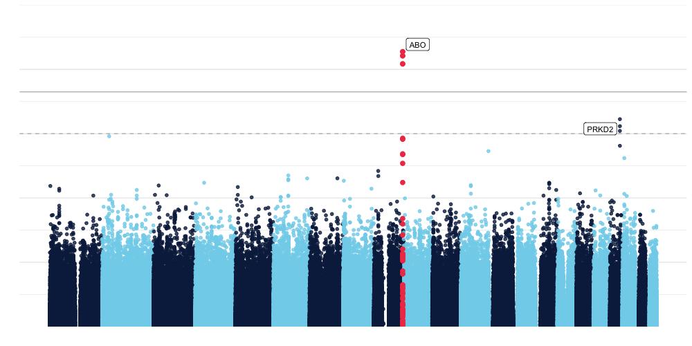

Creating a website has absolutely been a wild ride!
Adding data to a post
knitr::kable(head(iris))| Sepal.Length | Sepal.Width | Petal.Length | Petal.Width | Species |
|---|---|---|---|---|
| 5.1 | 3.5 | 1.4 | 0.2 | setosa |
| 4.9 | 3.0 | 1.4 | 0.2 | setosa |
| 4.7 | 3.2 | 1.3 | 0.2 | setosa |
| 4.6 | 3.1 | 1.5 | 0.2 | setosa |
| 5.0 | 3.6 | 1.4 | 0.2 | setosa |
| 5.4 | 3.9 | 1.7 | 0.4 | setosa |
## `geom_smooth()` using formula 'y ~ x'
I love data visualization! Check out this plot that I made. It self annotatates the top hits in every chromosome (above suggestive significance).

Learn more about me here HMM this link doesn’t work… Relative links not working and the issue isn’t googling easily!